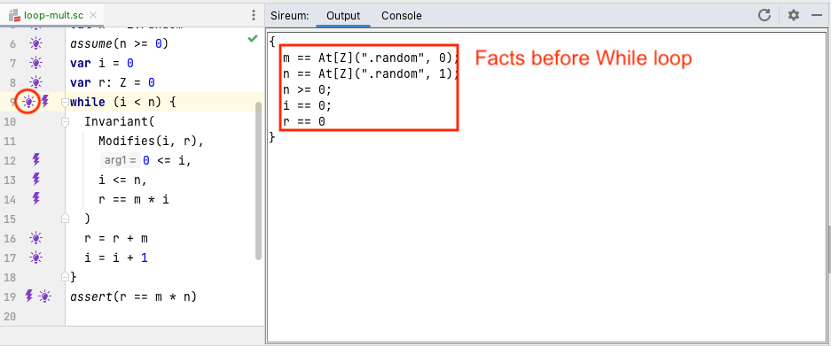
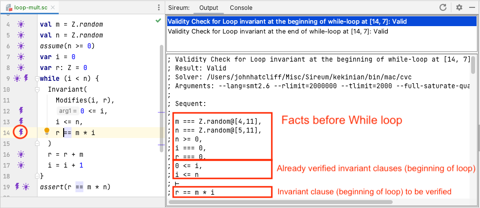
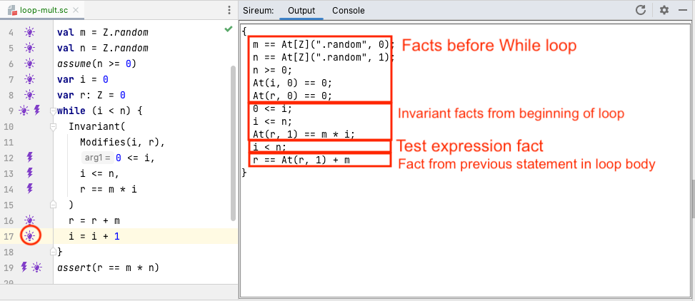
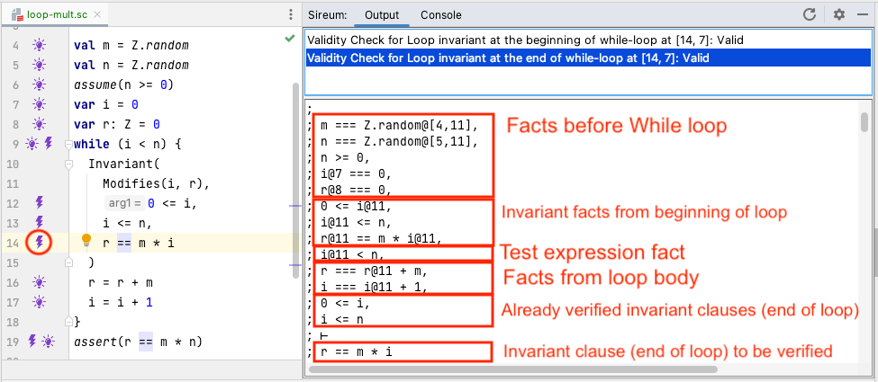
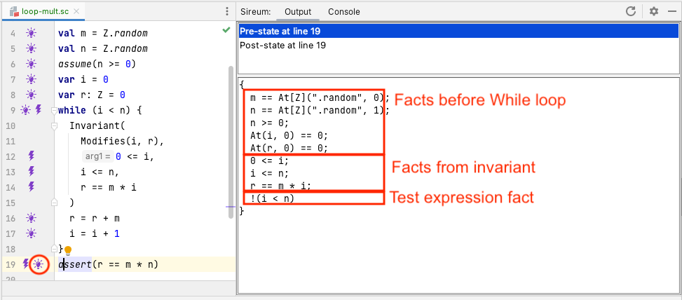

Logika for While Loops
Logika Verification of While Loops

Clicking on the bulb at the top of the while loop at line 9 shows the facts that Logika has accumulated before evaluating the while. At this point, as with if statements, Logika first has a verification obligation to show that the test expression i < n as well as its negation is satisfiable given the current facts. The bolt at line 9 references this verification obligation.
Of greater interest is the verification obligation to show that the loop invariant holds given the current facts.

As shown by the bolt margin annotations at lines 12-14, each invariant clause generates a corresponding verification obligation to prove that the clause holds. The figure above shows the Logika display when clicking on the bolt for the clause r == m * i at line 14. Following the verification structure for while, the invariant needs to be verified when first entering the loop and then at the bottom of the loop. The Logika shows the information for both of these with two entries in the clause’s bolt information, and in the figure above, the user has selected the verification of the invariant clause “at the beginning of the while loop”.
We have annotated the display to indicate the origin of facts in the verification sequent. Some facts originate from the program statements occuring before the loop (e.g., in this case, derived from the variable initializations and assume statements). In addition to these, at the point where Logika is trying to prove r == m * i, it has already proved the preceeding invariant clauses, so the corresponding facts are included.

The figure above, resulting from clicking the bulb at line 17 shows how facts are managed during verification of the loop body. The key points are:
- we can use facts from the loop invariant originating at the top of the loop body,
- we can use the fact that the test expression must be true since we are executing the loop body,
- we can accumulate facts from previous statement in the loop body (corresponding to statements that would be executed before in the current iteration)
- for any variables modified in the loop, because we cannot statically predict how many times the loop will iterate, facts within the loop cannot reference (a) any variable occurrences outside loop before the loop started (which would only be approriate for the first iteration), or occurences below the current statement within the loop body (which would only be appropriate if there was a previous iteration) – the only fact references to variables in the
modifiescan be constraints from the invariant (indicating what we know will always be true at the top of the loop body – no matter how may iterations actually occur) and facts that are derived statements in the loop body up to the current point.
Note that the sequent includes facts originating before the while loop. From these, reasoning within the body can make use of those pertaining to variables not mentioned in the Modifies clause. However, facts pertaining to variables in the Modifies cannot be utilized (TBD: Robby, why do these facts, e.g., At(i,0) == 0 show up?).

Returning to the bolt on the invariant clause at line 14, we now examine the verification information for the invariant at the “end of the while loop”. Following the verification structure for the while statement, as assumptions for verifying the invariant at the end of the loop body, we get to use:
- facts about non-
Modifiesvariables occuring before the beginning of thewhile, - facts from assuming the invariant at the top of the body,
- the fact that the loop test expression is true,
- facts generated from processing statements in the body, and
- facts corresponding to invariant clauses already verified.

As the verification process continues after the loop, the bulb display at line 19 shows the facts that are available to verify the assert statement. Following the verification structure of the while, the facts we can use are:
- facts from before the
whileloop that do not involve variables modified in the while loop (we can’t use facts about modified variables because we don’t know how many times the loop iterated – we can only rely on the invariant to summarize properties of the modified variables), - facts from the invariant, and
- the fact that the loop test expression is false (because the loop has exited).